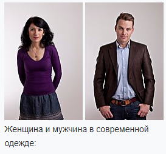
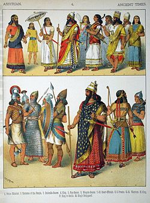
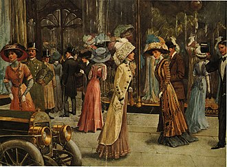

Оде́жда

Оде́жда — изделие или совокупность изделий, надеваемых человеком и несущих утилитарные и эстетические функции[1]. Предохраняет тело от негативного влияния окружающей среды. Может выполнять эстетические функции, использоваться для создания образа человека, демонстрации социального статуса[источник не указан 219 дней]. Одежду делают из ткани, вязаного полотна, кожи, меха и других материалов; она может дополняться украшениями и аксессуарами.
Основные понятия
Стиль — сочетание предметов одежды, украшений, аксессуаров для создания определённого образа, соответствующего ситуации (праздничное мероприятие), обстановке (рабочая обстановка) и социальному статусу[источник не указан 219 дней]. В более широком смысле — идейная и художественная общность изобразительных приёмов в искусстве определённого периода. Традиционно в истории костюма (равно как и в истории искусства) выделяют следующие стили: готика, ренессанс, барокко, классицизм, рококо, неоклассицизм, ампир, романтизм[4].
Мода — явление быстрого распространения и кратковременного господства определённых фасонов одежды (и её материалов) для создания образа «человека, идущего в ногу со временем». Веяния моды задаются СМИ, на них опираются производители одежды при создании коллекций, потребители.
Высокая мода — задание определённых направлений в одежде (материалы, фасон) и аксессуарах на грядущий сезон ведущими Домами моды. Продукция Домов моды выпускается малыми партиями и предназначена для привилегированных слоёв общества; представляется на Неделях моды.
Сезон — определяет сменяемость коллекций у производителей одежды. Чаще всего, их два — осень-зима и весна-лето.
Коллекция — серия моделей одежды, представленная несколькими фасонами с различным декоративным решением в рамках одной концепции.
Силуэт — форма одежды по степени прилегания к телу. Различают силуэты прилегающий, полуприлегающий, трапециевидный и прямоугольный.
Модель одежды — термин массового производства одежды; служит эталоном для серийного пошива одежды.
Качество одежды — это совокупность потребительских и производственных свойств изделий, определяющий степень и его пригодности по назначению.
История одежды
Генетический анализ нательной вши, которая живёт в одежде человека, показывает, что она отделилась от головной вши около 170 000 лет назад, что подтверждает теорию о том, что люди начали носить одежду примерно в это время[12].
В Африке, которая является естественной средой обитания человека, одежда появилась намного позже, чем в Евразии, где она была необходима для защиты тела от холода. Так, наиболее древние находки инструментов и (следов) одежды обнаружены на стоянках неандертальцев, а у сапиенсов, живших в то же время в Африке, обнаружены только отдельные элементы одежды (пояс, верёвочка), которые больше похожи на украшения и вряд ли имели функциональное назначение[13].
История одежды с древнейших времён до наших дней является как бы зеркалом, в котором отражается вся история человечества. Каждая страна, каждый народ в отдельные периоды своего развития налагают свой отпечаток, свои специфические черты на одежду людей. История моды почти так же стара, как и история костюма.
Первобытное общество
С древнейших времён человек стремился прикрыть своё обнажённое тело, что можно было бы объяснить целомудрием и чувством стыда. Однако такое толкование представляется слишком узким и ограниченным, поскольку известны племена, которые обходились и обходятся без одежды (например, аборигены Австралии и др.). Вероятнее всего, одежда была не только и не столько прикрытием, сколько символом защиты от угрозы извне, как действительной, так и (может быть, даже ещё в большей степени) мнимой. Даже амулет был в своё время «одеждой», так как он являлся преградой между голым, ранимым человеческим телом и окружающим миром.
Данные археологических раскопок свидетельствуют, что одежда появилась уже на самых ранних стадиях развития человеческого общества. Главным материалом для первобытной одежды повсеместно были шкуры животных. Необходимые для их обработки инструменты (скребки, ножи, проколки и т. п.) обнаруживают на стоянках первобытных людей, относящихся к эпохе мустье (100-40 тыс. лет назад). Самыми первыми видами одежды были, по-видимому, набедренные повязки и плащи. Затем, привязав к поясу две длинные шкуры, защитившие ноги от колючек, человек получил чулки; потом появились нарукавники, предохранявшие от повреждений руки. И наконец, все эти отдельные части одежды начали соединять в одно целое, скрепляя их ниткой из жил или растительных волокон.
Судя по археологическим данным, сшитая одежда появилась уже в эпоху верхнего палеолита. Так, в 1964 г. экспедиция О. Н. Бадера на стоянке Сунгирь (близ Владимира) обнаружила погребение пожилого мужчины, умершего 23 тыс. лет назад. Археологам удалось воссоздать его одежду, которая состояла из короткого плаща, кожаной или замшевой рубахи с длинными рукавами, без разреза спереди, надевавшейся через голову (такие рубахи — малицы, или анораки — и сейчас носят народы Арктики), и длинных кожаных брючин, сшитых вместе с кожаной обувью типа мокасин. Вся одежда была богато отделана бусами из бивня мамонта, общее количество которых превышало 3000. Неповторимые скульптурные изображения женщин, одетых в меховые «комбинезоны» с капюшонами, были найдены на сибирских палеолитических стоянках Буреть и Мальта.
В эпоху неолита человек научился прясть, ткать и вязать. В этот период он располагал уже целым набором различных предметов одежды, сделанных как из шкур животных, так и из разных тканей. В зависимости от применяемых материалов и климатических условий одежду по-разному крепили на теле: надевали через голову или драпировали вокруг тела. Примерно в это же время появилась распашная одежда (с разрезом спереди).
Получить представление о гардеробе человека того времени помог учёным мумифицированный труп Этци — охотника бронзового века, найденный в 1991 году в Эцтальских Альпах (на границе между Австрией и Италией). Верхней одеждой ему служил плащ, сплетённый из травяных волокон (такие плащи местные пастухи носили ещё в XX в. н. э.). Под плащом находилась одежда, сшитая из козьих шкурок — безрукавка длиной до колен, сшитая сухожилиями, длинные гетры и набедренная повязка. Безрукавка была в нескольких местах заштопана нитками из волокон жёсткой травы. Одежду Эци дополняли меховая шапка, завязанная ремешками под подбородком, и высокие башмаки из меха и замши, утеплённые внутри слоем сена (своего рода доисторические снегоступы). Значение этой находки трудно переоценить — впервые в истории археологии в руки исследователей попал столь полный комплект одежды обычного человека эпохи неолита, причём одежды повседневной, отражающей потребности, вкусы и привычки людей конца каменного века.
Древний Восток

Ассирийская одежда
«Древний Восток» — собирательное географическое, социально-экономическое и культурно-историческое понятие, объединяющее древнейшие в истории человечества государства — Древний Египет, Шумер, Вавилон, Ассирию, Древнюю Иудею, Древний Китай, Древнюю Индию и др. Различие природно-климатических и социокультурных условий определяло значительную разницу в эстетических идеалах, вкусах и предпочтениях народов, населявших регион, поэтому говорить об одежде на Древнем Востоке в целом довольно сложно.
В Древней Месопотамии основным сырьём для ткацкого производства служила овечья и козья шерсть. До нас дошли десятки терминов для обозначения различных видов шерстяных тканей, относящихся к их качеству или внешнему виду. Ткани окрашивались в различные цвета. Особенно ценились ткани, окрашенные пурпуром.
Ассирийская одежда на иллюстрациях 1882 года
В Шумере основной одеждой мужчин были туника и набедренная повязка. Туника представляла собой рубашку без рукавов или с очень короткими рукавами, в талию. Набедренник выглядел как полотнище длиной от 4 до 9 локтей (2 — 4,5 метра), нередко отороченное бахромой. В большинстве случаев его просто обматывали вокруг тела и закрепляли поясом. Верхней одеждой служил плащ прямоугольной формы; его носили, завязав на груди тесёмками, или обёртывали вокруг тела, оставляя свободной правую руку.
В Ассирии и Вавилоне основной мужской одеждой тоже была туника с короткими цельнокроеными рукавами — канди. Чем знатнее и богаче был человек, тем длиннее была его канди, и тем богаче она отделывалась. Несколько одежд одновременно имел право носить только царь. Знаком царского достоинства был пурпурный конас — плащ особого покроя, обильно украшенный вышивкой, бахромой и золотыми чеканными пластинками. Одежда воинов, помимо рубахи и плаща, включала в себя новый элемент костюма — штаны.
Женская одежда сравнительно мало отличалась от мужской. Женская туника была, как правило, длиннее мужской, в верхней своей части шилась в обтяжку, иногда имела разрезы сбоку. Была известна также юбка, сшитая из нескольких горизонтальных полотнищ, каждое из которых имело 0,5 метра в ширину, причём верхнее полотнище сворачивалось в жгут и заменяло пояс. В Вавилоне и Ассирии женщины носили длинные прямые платья с длинными узкими рукавами.
Новое время

В XIX веке мануфактурные технологии благодаря изобретению паровой машины (а также электричества) вышли на новый уровень. В частности, в 1790 году Жозеф Мари Жаккар изобрёл одноимённый ткацкий станок, повышающий точность узора и скорость производства тканей. Одежда, изготавливаемая с помощью машин, стала более доступной для всех слоёв населения. До этого преобладала одежда из материалов грубой обработки (одежду из тонких материалов носили только аристократы и состоятельные люди).
В этот период стали появляться виды одежды, используемые современным обществом: облегающая одежда, с короткими рукавами, летняя и зимняя, из преимущественно тёмных тканей. Улучшение санитарно-гигиенических условий, а также экономических, позволяет значительной части населения Европы и Северной Америки носить нижнее бельё.
До XIX века практически нельзя было купить готовую одежду — её шили либо сами потребители, либо они заказывали её портному; так, Александр Гамильтон в 1791 г. в своём «Докладе о промышленной продукции» отмечал, что четыре пятых одежды американцы шьют сами. Лишь богатые люди могли заказывать одежду у портного.
Производство готовой одежды получило развитие только в первой половине XIX века. Поначалу купить можно было лишь самую дешёвую одежду. До того как получило развитие швейное производство, почти вся готовая одежда, которая поступала в продажу, была ношеной, и бедняки, в основном, покупали ту одежду, которую продавали после использования богатые люди.
К середине XIX века стала широко применяться швейная машина. Кроме того, новое приспособление для разрезания ткани позволяло разрезать сразу восемнадцать её слоёв. Это облегчало производство многих заготовок по одной выкройке.
Во время Гражданской войны в США потребовалось одеть в военную форму сотни тысяч солдат. Спрос на военную форму способствовал развитию стандартизации. При заказе военной формы указывались наиболее ходовые размеры. В результате в швейной промышленности получило распространение изготовление одежды по стандартным выкройкам.
В США в 1880 году лишь менее половины всей мужской одежды шилось на фабриках, тогда как в начале XX века уже почти все мужчины были одеты в готовую одежду. Даже богатые люди, которые раньше заказывали одежду портным, теперь покупали её в дорогих магазинах[14].